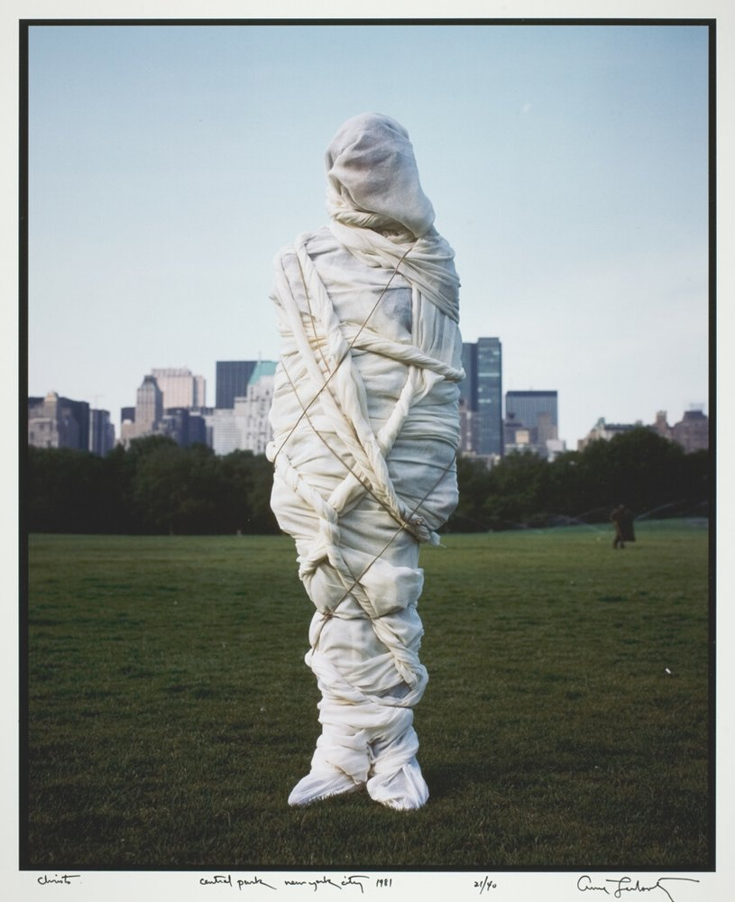

Christo, Central Park, New York City
Annie Leibovitz · 1981 · Silver dye-bleach print · 42.7 × 34.6 cm (image) · Art Institute of Chicago
In copyright. Look and learn: shown for study, not for download.
Annie Leibovitz was thirty-one or thirty-two when she made this portrait in Central Park, and had been chief photographer of Rolling Stone since 1973. She had joined the magazine as a staff photographer in 1970, while still a student at the San Francisco Art Institute, where she had started out in painting meaning to become an art teacher. She left Rolling Stone for Vanity Fair in 1983.